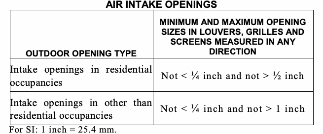
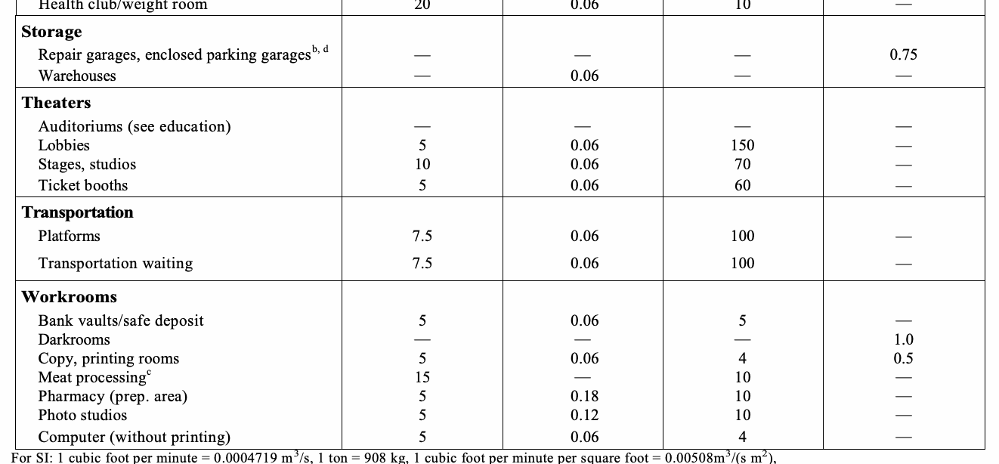
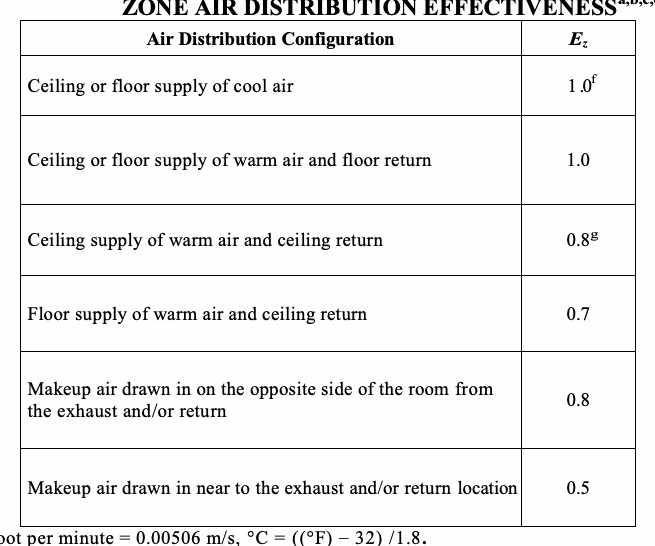
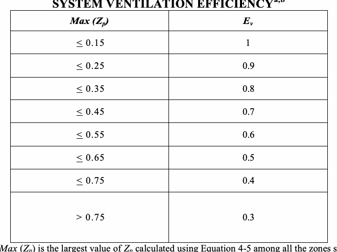

This chapter shall govern the ventilation of spaces within a building intended to be occupied. Mechanical exhaust systems, including exhaust systems serving clothes dryers and cooking appliances; hazardous exhaust systems; dust, stock and refuse conveyor systems; subslab soil exhaust systems; smoke control systems; energy recovery ventilation systems and other systems specified in Section 502 shall comply with Chapter 5.
Every occupiable space shall be ventilated by natural means in accordance with Section 402 or by mechanical means in accordance with Section 403. Every habitable space shall be ventilated by natural means in accordance with Section 402, and, if required by Table 403.3, by mechanical means in accordance with Section 403.
Ventilation shall be provided during the periods that the room or space is occupied.
Air intake openings shall comply with the following:
1. Intake openings shall be located a minimum of 10 feet (3048 mm) from lot lines or buildings on the same lot. For buildings on lots measuring less than 20 feet (6096 mm) in width, intake openings shall be located at the centerline between lot lines. Where openings front on a street or public way, the distance shall be measured to the centerline of the street or public way.
2. Outdoor intakes for high-rise office buildings having occupied floors located more than 75 feet (22 860 mm) above the lowest level of fire department vehicle access serving spaces above the second story and serving spaces greater than 10,000 square feet (929 m2) of floor area shall be located at least 20 feet (6096 mm) above ground level, at least 30 feet (9144 mm) from exhaust outlets and other exhaust discharges, and at least 20 feet (6096 mm) from areas that may collect vehicular exhaust, such as off street loading bays.
3. Mechanical and gravity outdoor air intake openings shall be located not less than 10 feet (3048 mm) horizontally from any hazardous or noxious contaminant source, such as vents, exhausts (including but not limited to exhaust from dry cleaning establishments, spray booths, and cooling towers), streets, alleys, parking lots and loading docks, except as specified in Item 3 of Section 501.2.1.
4. Where the requirements of Item 3 above cannot be achieved, intake openings shall be located not less than 3 feet (914 mm) below contaminant sources where such sources are located within 10 feet (3048 mm) of the opening.
5. Intake openings in Group I occupancies shall comply with ANSI/ASHRAE/ASHE 170, as required.
6. Intake openings on structures in flood hazard areas shall comply with Appendix G of the New York City Building Code.
Exception: Group R-3 occupancies are not required to comply with Section 401.4.
An outdoor air intake opening with gross area of more than 144 square inches (0.0929 m2) shall be provided with fire dampers and smoke dampers, or combined fire and smoke dampers when such opening is located as follows:
1. Less than 30 feet (9144 mm) above grade.
2. Less than 30 feet (9144 mm) in any direction from any opening in another building.
3. Less than 15 feet (4572 mm) from a lot line.
4. Less than 50 feet (15 240 mm) above and less than 50 feet (15 240 mm) in any direction from a roof constructed of combustible material or a building in which the exterior walls are constructed wholly or partly of wood.
5. Where fire dampers are required by Section 607.5.6.
Exceptions:
1. Smoke dampers shall not be required for outdoor air intake openings installed in any construction required to have a fire-resistance rating that is less than 2 hours.
2. Smoke dampers shall not be required for outdoor air intake openings of systems greater than 15,000 cfm (7.1 m3/s) which are provided with smoke dampers in accordance with Chapter 6 of this code and arranged so as to not introduce smoke into the building or space in which the equipment is located.
Air intake openings that terminate outdoors shall be protected with corrosion-resistant screens, louvers or grilles. Openings in louvers, grilles and screens shall be sized in accordance with Table 401.5, and shall be protected against local weather conditions. Outdoor air intake openings located in exterior walls shall meet the provisions for exterior wall opening protectives in accordance with the New York City Building Code.

Stationary local sources producing air-borne particulates, heat, odors, fumes, spray, vapors, smoke or gases in such quantities as to be irritating or injurious to health shall be provided with an exhaust system in accordance with Chapter 5 or a means of collection and removal of the contaminants. Such exhaust shall discharge directly to an approved location at the exterior of the building.
All exterior louvers for building ventilation systems shall either:
1. Receive an A rating according to AMCA Standard 550 for wind-driven rain penetration for a 50 mile per hour (80.4 km/h) wind velocity with a rainfall rate of 8 inches (203 mm) per hour; or
2. Be installed on a plenum configured to intercept any wind-driven rain penetrating the louver and to prevent the rain from entering the building ductwork system. Such plenum shall be waterproofed and equipped with a drainage system to convey water penetrating the louver to storm or sanitary drains.
Natural ventilation of occupied and habitable spaces shall comply with Chapter 12 of the New York City Building Code.
Mechanical ventilation shall be provided by a method of supply air and return or exhaust air. The amount of supply air shall be approximately equal to the amount of return and exhaust air. The system shall not be prohibited from producing negative or positive pressure. The system to convey ventilation air shall be designed and installed in accordance with Chapter 6.
The minimum outdoor airflow rate shall be determined in accordance with Section 403.3. Ventilation supply systems shall be designed to deliver the required rate of outdoor airflow to the breathing zone within each occupiable space.
Exception: Where a registered design professional demonstrates that an engineered ventilation system design will prevent the maximum concentration of contaminants from exceeding that obtainable by the rate of outdoor air ventilation determined in accordance with Section 403.3, the minimum required rate of outdoor air shall be reduced in accordance with such engineered system design.
The outdoor air required by Section 403.3 shall not be recirculated. Air in excess of that required by Section 403.3 shall not be prohibited from being recirculated as a component of supply air to building spaces, except that:
1. Ventilation air shall not be recirculated from one dwelling unit to another or to dissimilar occupancies.
2. Supply air to a swimming pool and associated deck areas shall not be recirculated unless such air is dehumidified to maintain the relative humidity of the area at 60 percent or less. Air from this area shall not be recirculated to other uses or occupancies.
3. Where mechanical exhaust is required by Note b of Table 403.3, recirculation of air from such spaces shall be prohibited. All air supplied to such spaces shall be exhausted, including any air in excess of that required by Table 403.3.
4. Where mechanical exhaust is required by Note g of Table 403.3, mechanical exhaust is required and recirculation is prohibited.
Except where recirculation from such spaces is prohibited by Table 403.3, air transferred from occupiable spaces is not prohibited from serving as makeup air for required exhaust systems in such spaces as kitchens, baths, toilet rooms, elevators and smoking lounges. The amount of transfer air and exhaust air shall be sufficient to provide the flow rates as specified in Section 403.3. The required outdoor airflow rates specified in Table 403.3 shall be introduced directly into such spaces or into the occupied spaces from which air is transferred or a combination of both.
Ventilation systems shall be designed to have the capacity to supply the minimum outdoor airflow rate determined in accordance with this section. The occupant load utilized for design of the ventilation system shall not be less than the number determined from the estimated maximum occupant load rate indicated in Table 403.3. Ventilation rates for occupancies not represented in Table 403.3 shall be those for a listed occupancy classification that is most similar in terms of occupant density, activities and building construction; or shall be determined by an approved engineering analysis. The ventilation system shall be designed to supply the required rate of ventilation air continuously during the period the building is occupied, except as otherwise stated in other provisions of the code.
With the exception of smoking lounges, the ventilation rates in Table 403.3 are based on the absence of smoking in occupiable spaces. Where smoking is anticipated in a space other than a smoking lounge, the ventilation system serving the space shall be designed to provide ventilation over and above that required by Table 403.3 in accordance with accepted engineering practice.
Exceptions:
1. The occupant load is not required to be determined, based on the estimated maximum occupant load rate indicated in Table 403.3, where approved statistical data documents the accuracy of an alternate anticipated occupant density.
2. The occupant load used in computing the required ventilation shall be the maximum number who will occupy the room or space simultaneously during any 2-hour period.
3. Dynamic reset (Demand Controlled Ventilation). The system may be designed to reset the design outdoor air intake airflow and/or space or zone airflow as operating conditions change. These conditions include, but are not limited to:
3.1 Variations in occupancy or ventilation airflow in one or more individual zones for which ventilation airflow requirements will be reset. Note: Examples of measures for estimating such variations include: occupancy scheduled by time of day, a direct count of occupants, or an estimate of occupancy or ventilation rate per person using occupancy sensors such as those based on indoor CO2 concentrations. 3.2 Variations in the efficiency with which outdoor air is distributed to the occupants under different ventilation system airflows and temperatures.
3.3 A higher fraction of outdoor air in the air supply due to intake of additional outdoor air for free cooling or exhaust air makeup. Hotels, motels, resorts and dormitories Multipurpose assembly 5 0.06 120 — Bathrooms/toilet—privateg — — — 25/50f Bedroom/living room 5 0.06 10 — Conference/meeting 5 0.06 50 — Dormitory sleeping areas 5 0.06 20 — Gambling casinos 7.5 0.18 120 — Lobbies/prefunction 7.5 0.06 30 — Laboratories j
Biological — 1.0 — 1.0
Chemical — 1.0 — 1.0
Industrial and nonteaching — 1.0 — 1.0
Nonproduction chemical labs — 1.0 — 1.0
Offices Conference rooms 5 0.06 50 — Office spaces 5 0.06 5 — Reception areas 5 0.06 30 — Telephone/data entry 5 0.06 60 — Main entry lobbies 5 0.06 10 — Private dwellings, single and multiple Garages, common for multiple unitsb — — — 0.75 Garages, separate for each dwellingb — — — 100 cfm per car Kitchensb — — — 25/100f Living areasc,i 0.35 ACH but not less — Based upon number of — than 15 cfm/person bedrooms. First bedroom, 2; each additional bedroom, 1 Toilet rooms and bathroomsg — — — 20/50f Public spaces Corridors — 0.06 — — Elevator car — — — 1.0 Shower room (per shower head)g — — — 50/20f Smoking loungesb 60 — 70 — Toilet rooms – public g — — — 50/70e Places of religious worship 5 0.06 120 — Courtrooms 5 0.06 70 — Legislative chambers 5 0.06 50 — Libraries 5 0.12 10 — Museums (children’s) 7.5 0.12 40 — Museums/galleries 7.5 0.06 40 — Retail stores, sales floors and showroom floors Sales (except as below) 7.5 0.12 15 — Dressing rooms — — — 0.25 Mall common areas 7.5 0.06 40 — Shipping and receiving — 0.12 — — Smoking loungesb 60 — 70 — Storage rooms — 0.12 — — Warehouses (see storage) — — — — Specialty shops Automotive motor-fuel dispensing stationsb — — — 1.5 Barber 7.5 0.06 25 0.5 Beauty and nail salonsb, h 20 0.12 25 0.6 Embalming roomb — — — 2.0 Pet shops (animal areas)b 7.5 0.18 10 0.9 Supermarkets 7.5 0.06 8 — Sports and amusement Disco/dance floors 20 0.06 100 — Bowling alleys (seating areas) 10 0.12 40 — Game arcades 7.5 0.18 20 — Ice arenas without combustion engines — 0.30 — 0.5 Gym, stadium, arena (play area) — 0.30 — — Spectator areas 7.5 0.06 150 — Swimming pools (pool and deck area) — 0.48 — — Health club/aerobics room 20 0.06 40 — Health club/weight room 20 0.06 10 —
For SI: 1 cubic foot per minute = 0.0004719 m3/s, 1 ton = 908 kg, 1 cubic foot per minute per square foot = 0.00508m3/(s m2), °C = ((°F) -32) /1.8, 1 square foot = 0.0929 m2.
| OCCUPANCY CLASSIFICATION | PEOPLE OUTDOOR AIRFLOW RATE IN BREATHING ZONE CFM/PERSON | AREA OUTDOOR AIRFLOW RATE IN BREATHING ZONE Ra CFM/FT2a | DEFAULT OCCUPANT DENSITY #/1000 FT2a | EXHAUST AIRFLOW RATE CFM/FT2a |
|---|---|---|---|---|
| Correctional facilities Cells without plumbing fixtures with plumbing fixturesg Dining halls (see food and beverage service) Guard stations Day room Booking/waiting | 5 5 — 5 5 7.5 | 0.12 0.12 — 0.06 0.06 0.06 | 25 25 — 15 30 50 | — 1.0 — — — — |
| Dry cleaners, laundries Coin-operated dry cleaner Coin-operated laundries Commercial dry cleanerl Commercial laundry Storage, pick up | 15 7.5 30 25 7.5 | — 0.06 — — 0.12 | 20 20 30 10 30 | — — — — — |
| Education Auditoriums Corridors (see public spaces) Media center Sports locker roomsg Music/theater/dance Smoking loungesb Day care (through age 4) Classrooms (ages 5-8) Classrooms (age 9 plus) Lecture classroom Lecture hall (fixed seats) Art classroom Science laboratoriesg, k Wood/metal shopsg Computer lab Multiuse assembly Locker/dressing roomsg | 5 — 10 — 10 60 10 10 10 7.5 7.5 10 10 10 10 7.5 — | 0.06 — 0.12 — 0.06 — 0.18 0.12 0.12 0.06 0.06 0.18 0.18 0.18 0.12 0.06 — | 150 — 25 — 35 70 25 25 35 65 150 20 25 20 25 100 — | — — — 0.5 — — — — — — — 0.7 1.0 0.5 — — 0.25 |
| Food and beverage service Bars, cocktail lounges Cafeteria, fast food Dining rooms Kitchens (cooking)b | 7.5 7.5 7.5 — | 0.18 0.18 0.18 — | 100 100 70 — | — — — 0.7 |
| Hospitals, nursing and convalescent homes Autopsy roomsb Medical procedure rooms Operating rooms Patient rooms Physical therapy Recovery and ICU | — 15 30 25 15 15 | — — — — — — | — 20 20 10 20 20 | 0.5 — — — — — |

The minimum outdoor airflow required to be supplied to each zone shall be determined as a function of the occupancy classification and space air distribution effectiveness in accordance with Sections 403.3.1.1 through 403.3.1.3.
The outdoor airflow rate required in the breathing zone (Vbz) of the occupiable space or spaces in a zone shall be determined in accordance with Equation 4-1.
Vbz = RpPz + RaAz (Equation 4-1)
where:
Az = Zone floor area: the net occupiable floor area of the space or spaces in the zone.
Pz = Zone population: the number of people in the space or spaces in the zone.
Rp = People outdoor air rate: the outdoor airflow rate required per person from Table 403.3.
Ra = Area outdoor air rate: the outdoor airflow rate required per unit area from Table 403.3.
The zone air distribution effectiveness (Ez) shall be determined using Table 403.3.1.2.

The zone outdoor air flow rate (Voz), shall be determined in accordance with Equation 4-2.
Voz = Vbz / Ez (Equation 4-2)
The outdoor air required to be supplied by each ventilation system shall be determined in accordance with Sections 403.3.2.1 through 403.3.2.3 as a function of system type and zone outdoor airflow rates.
Where one air handler supplies a mixture of outdoor air and recirculated return air to only one zone, the system outdoor air intake flow rate (Vot) shall be determined in accordance with Equation 4-3.
Vot = Voz (Equation 4-3)
Where one air handler supplies only outdoor air to one or more zones, the system outdoor air intake flow rate (Vot) shall be determined using Equation 4-4.
Vot = Σ all zones Voz (Equation 4-4)
Where one air handler supplies a mixture of outdoor air and recirculated return air to more than one zone, the system outdoor air intake flow rate (Vot) shall be determined in accordance with Sections 403.3.2.3.1 through 403.3.2.3.4.
The primary outdoor air fraction (Zp) shall be determined for each zone in accordance with Equation 4-5.
Zp = Voz / Vpz (Equation 4-5)
where:
Vpz = Primary airflow: The airflow rate supplied to the zone from the air-handling unit at which the outdoor air intake is located. It includes outdoor intake air and recirculated air from that air-handling unit but does not include air transferred or air recirculated to the zone by other means. For design purposes, Vpz shall be the zone design primary airflow rate, except for zones with variable air volume supply and Vpz shall be the lowest expected primary air-flow rate to the zone when it is fully occupied.
The system ventilation efficiency (Ev) shall be determined using Table 403.3.2.3.2 or Appendix A of ASHRAE 62.1.

The uncorrected outdoor air intake flow rate (Vou) shall be determined in accordance with Equation 4-6.
Vou = D Σ all zones RpPz + Σ all zones RaAz (Equation 4-6)
where:
D = Occupant diversity: the ratio of the system population to the sum of the zone populations, determined in accordance with Equation 4-7.
D = Ps / Σ all zones Pz (Equation 4-7)
where:
Ps = System population: The total number of occupants in the area served by the system. For design purposes, Ps shall be the maximum number of occupants expected to be concurrently in all zones served by the system.
The outdoor air intake flow rate (Vot) shall be determined in accordance with Equation 4-8.
Vot = Vou / Ev (Equation 4-8)
If it is known that peak occupancy will be of short duration and/or ventilation will be varied or interrupted for a short period of time, the design may be based on the average conditions over a time period T determined by Equation 4-9.
T = 3v/Vbz (Equation 4-9) (US)
T = 50v/Vbz (Equation 4-9) (SI)
where:
T = average time period, minutes
V = the volume of the zone of which averaging is being applied, cubic feet
Vbz = the breathing zone outdoor airflow calculated using Equation 4-1 and design valve of the zone population Pz, cfm Acceptable design adjustments based on this optional provision include the following:
1. Zone with fluctuating occupancy: the zone population (Pz) may be averaged over time, T.
2. Zone with intermittent interruption of supply air: the average outdoor airflow supplied to breathing zone over time T shall be no less than the breathing zone outdoor airflow (Vbz) calculated using Equation 4-1.
3. A system with intermittent closure of outdoor air intake: the average outdoor air intake over time, T shall be no less than the minimum outdoor air intake (Vot) calculated using Equation 4-3, 4-4 or 4-8, as appropriate.
Exhaust airflow rate shall be provided in accordance with the requirements in Table 403.3. Exhaust makeup air shall be permitted to be any combination of outdoor air, recirculated air and transfer air, except as limited in accordance with Section 403.2.
The minimum flow rate of outdoor air that the ventilation system must be capable of supplying during its operation shall be permitted to be based on the rate per person indicated in Table 403.3 and the actual number of occupants present.
Variable air volume air distribution systems, other than those designed to supply only 100-percent outdoor air, shall be provided with controls to regulate the flow of outdoor air. Such control system shall be designed to maintain the flow rate of outdoor air at a rate of not less than that required by Section 403.3 over the entire range of supply air operating rates.
The ventilation air distributing system shall be provided with means to adjust the system to achieve at least the minimum ventilation airflow rate as required by Sections 403.3 and 403.4. Ventilation systems shall be balanced by an approved method. Such balancing shall verify that the ventilation system is capable of supplying and exhausting the airflow rates required by Sections 403.3 and 403.4.
Mechanical ventilation systems for enclosed parking garages shall be permitted to operate intermittently where the system is arranged to operate automatically upon detection of a concentration of carbon monoxide of 25 parts per million (ppm) by approved automatic detection devices.
Automatic operation of the system shall not reduce the ventilation airflow rate below 0.05 cfm per square foot (0.00025 m3/s • m2) of the floor area and the system shall be capable of producing a ventilation airflow rate of 0.75 cfm per square foot (0.0038 m3/s • m2) of floor area.
Connecting offices, waiting rooms, ticket booths and similar uses that are accessory to a public garage shall be maintained at a positive pressure and shall be provided with ventilation in accordance with Section 403.3.
Mechanical ventilation systems shall be provided with manual or automatic controls that will operate such systems whenever the spaces are occupied. Air-conditioning systems that supply required ventilation air shall be provided with controls designed to automatically maintain the required outdoor air supply rate during occupancy.
Each air distribution system shall be provided with not less than one manual control to stop the operation of the supply, return, and exhaust fans(s) in an emergency. The manual control shall be provided at an approved location. A disconnect switch shall not be considered a manual control.
Any building where the main use or dominant occupancy is classified in Occupancy Group B having occupied floors located more than 75 feet (22 860 mm) above the lowest level of fire department vehicle access, where a system serves a floor or floors other than the floor on which the equipment is located, shall be provided with the following controls, in addition to the controls required by this chapter:
1. Manual controls for operating individually each air supply and each exhaust or return fan in the system located as follows:
1.1. At the Fire Command Center, and
1.2. In the room containing the affected air-handling fans.
2. Manual controls for operating individually or in groups each remote control reversible fire shutter, when such shutters are provided in accordance with the provisions of the New York City Building Code, or each smoke damper provided in accordance with the provisions of the New York City Building Code. Such controls shall be located at the Fire Command Center.
Uninhabited spaces, such as crawl spaces and attics, shall be provided with natural ventilation openings as required by the New York City Building Code or shall be provided with a mechanical exhaust and supply air system. The mechanical exhaust rate shall be not less than 0.02 cfm per square foot (0.00001 m3/s • m2) of horizontal area and shall be automatically controlled to operate when the relative humidity in the space served exceeds 60 percent.
The design and materials used in the installation of the methane and radon vent systems shall be approved by the commissioner and shall comply with all applicable rules of the Fire Department.
LABORATORIES
Nonproduction chemical laboratories complying with the hazardous materials quantity limitations of Section 424 of the New York City Building Code shall provide a mechanical ventilation system in accordance with Table 403.3 of this code and NFPA 45, except that ducts constructed of combustible materials shall not be permitted.